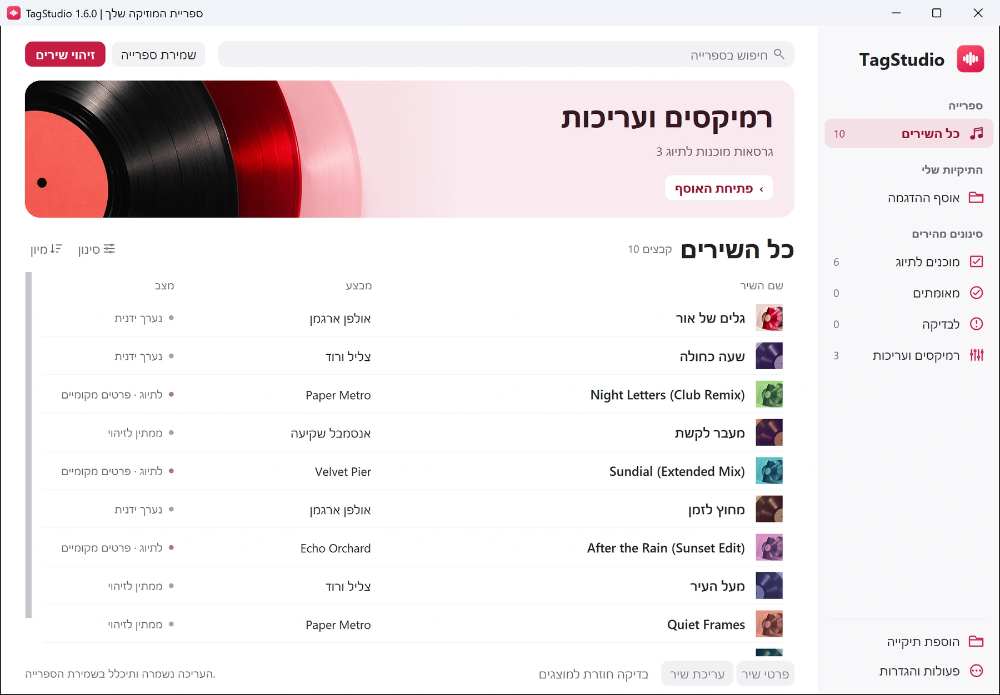
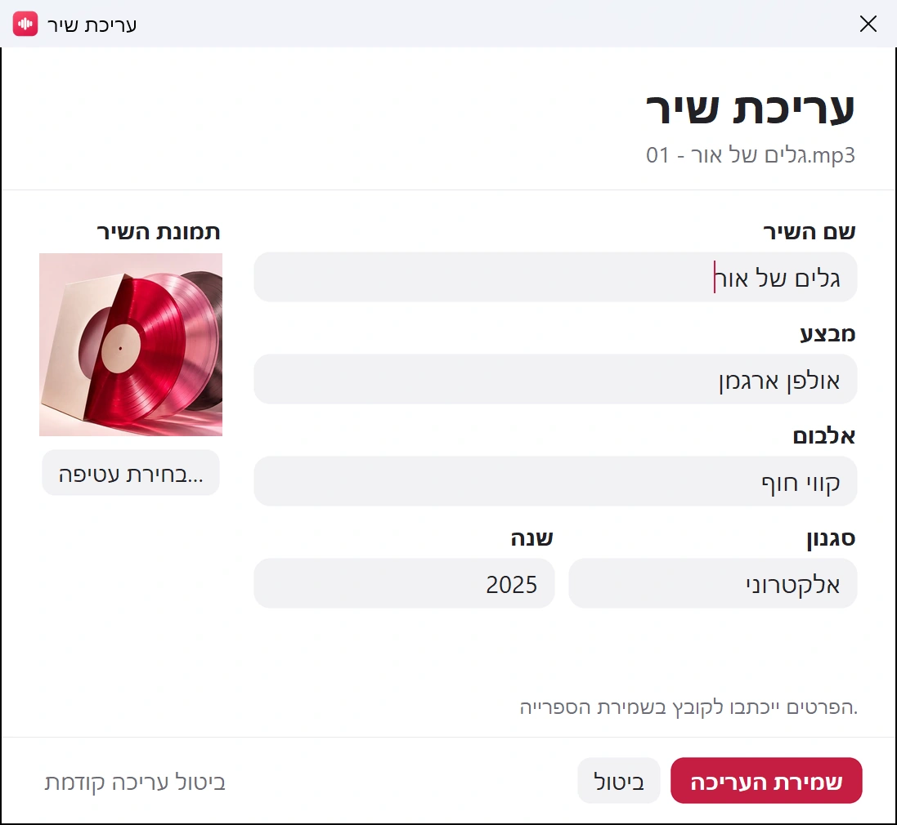
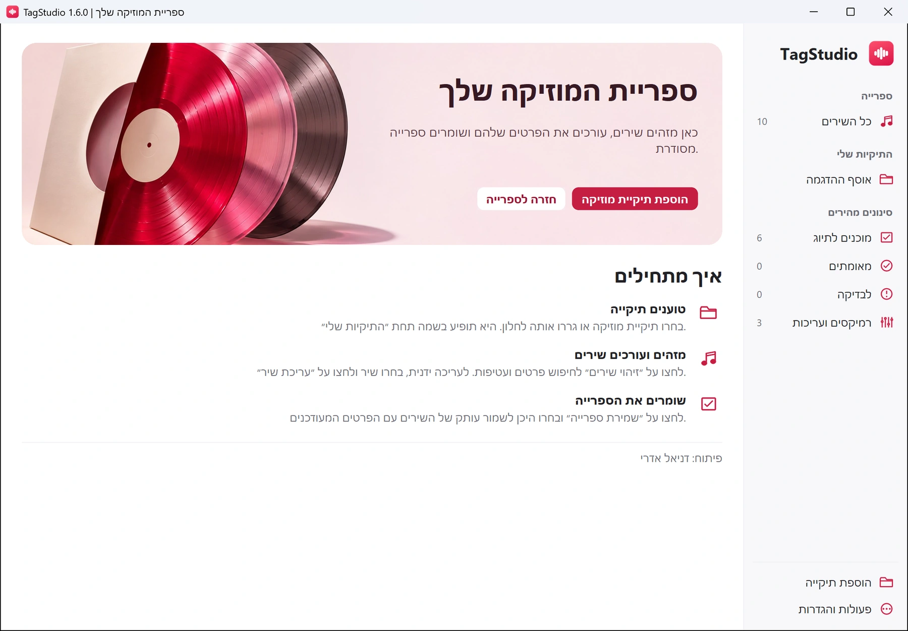

ספריית המוזיקה
שלך.
זהו שירים ורמיקסים, ערכו את הפרטים והעטיפות, ושמרו עותק מסודר של תיקיות המוזיקה שלכם.
הורדה ל־Windowsגרסה 1.6.0Windows בגרסת 64 ביט



מההתקנה לשיר הראשון
פותחים את המתקין
הורידו את TagStudio-Setup-x64.exe ופתחו אותו במחשב Windows של 64 ביט.
מוסיפים תיקיית מוזיקה
גררו תיקייה לחלון או בחרו אותה ממסך הבית. אחרי הסריקה לחצו על ״זיהוי שירים״ לחיפוש בקטלוגים.
עורכים ושומרים עותק
אפשר לערוך שיר ידנית או לשמור את כל הפרטים המוכנים יחד. בחרו ״שמירת ספרייה״ ותיקיית יעד לעותק המעודכן.
עוד על הזיהוי ועל עדכוני גרסה
לחיצה כפולה על שיר מציגה את מקורות הזיהוי. במסנן ״שיר מקור אפשרי״ אפשר לבדוק רמיקסים, ובלשונית ״תמונה״ אפשר לחפש תצלום לפי מבצע. בדיקה ידנית ב־Shazam משתמשת בתוסף הרשמי בדפדפן.
היסטוריית הזיהוי נשמרת במחשב. אפשר לבחור שירים לבדיקה חוזרת. בפתיחת התוכנה נבדקות גרסאות חדשות, וגם בתפריט ״פעולות והגדרות״ אפשר לבחור ״בדיקת עדכונים״.